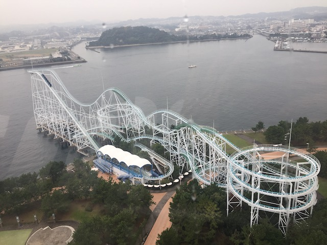
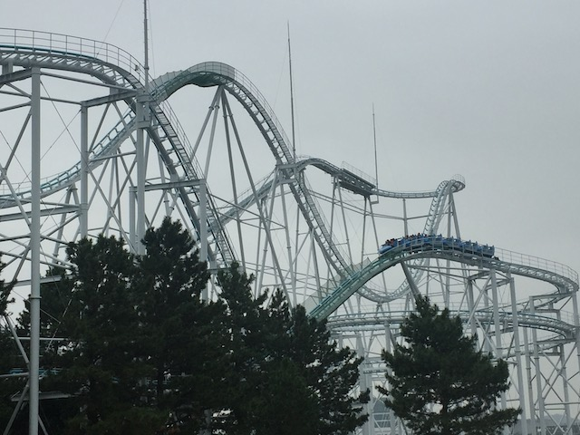
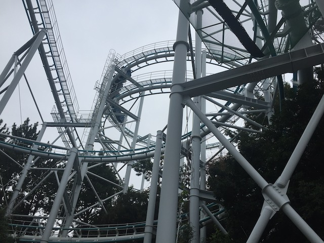
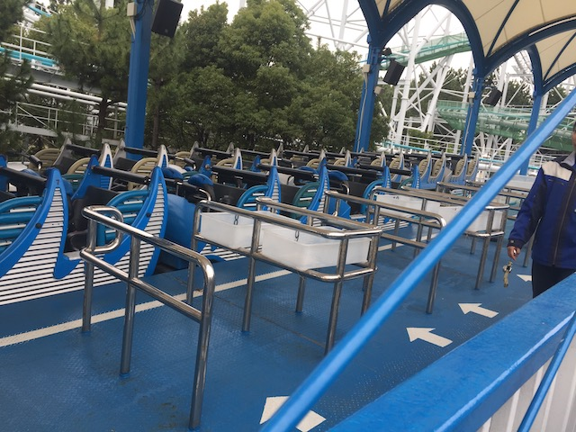

| |
Surf Coaster Review

We're here at Sea Paradise where we're going to be riding their biggest (and only) coaster (but not their star attraction), Surf Coaster. Yeah, it's technically called Surf Coaster Leviathan now, but it's just easier to call it Surf Coaster for short. This is an....interesting coaster. It's a Togo coaster that looks like all of their painful coasters, but people were shocked to discover that it's actually a really fun ride. So much of that made me come in with high expectations, and...it met them. Sure, it's not the most amazing ride ever, but it is a very fun, above average coaster. Now it now has different trains with lap bars, so there's no chance for headbanging now. Yeah. Hop in the trains and pull down the lap bar, and away we go. We climb up the lifthill and get a great view of the Pacific Ocean. Just....the ocean. Well, specifically Yokohama Bay, and yeah. You see the other side, but we're right over the ocean. Yeah. Fun fact, this ride sticks out right over the water, which is really cool. Hope you don't have a fear of the ocean. >=) Eventually, we reach the top, turn around, get a good look at the observation tower and Blue Fall in the background, and head down the first drop. It's pretty good, gains us some nice speed. We head over an airtime hill, and....it's pretty good. Nothing earth-shattering or anything, but some decent airtime is found here. Drop back down, lean a little at the bottom. Kind of awkward, but still pretty fun. Rise up another hill, and....there's a little bit of airtime here, but it's fairly mild. And then, we have it. DOUBLE FAKE HELIX OF DEATH!!! And yeah. This is a pretty good one. Nothing truly crazy, but still a pretty good one. Plus, it's not that often you get a double helix. That alone is pretty cool. We then head up another little hill. Cool, but it does have some laterals. Which is fine now. But it's still an awkward transition that I imagine would've had some headbanging back when it had OTSRs. I know the people who rode it back then claimed it didn't, but it's pointless to debate whether a ride used to have headbanging, when you only rode it in its current form with lap bars, never with OTSRs, and you agree that it's really fun today, which is all that matters. Head down a small drop, up another awkwardly transionted hill, back down another drop right over the ocean, and into another FAKEM HELIX OF DEATH!!! Yeah, Surf Coaster sure does love its fake helixes of death. And this is a strong one. =) We then head down a small little drop, that again, has a nice pop of airtime. Head right from that into another airtime hill. Yeah. I like this ride. =) I'm not kidding when I say this ride is above average. Up another awkward transition hill (Yeah, I'm glad this thing got converted to lap bars only), and FAKE HELIX OF DEATH!!! Sadly, this one is weaker than the others, but we're still having fun. Go through a little awkward straight track, just heading back out towards the ocean. Go through a dip, don't remember much airtime here, yeah. The ride is winding down sadly. Head through another turn, which, does have a few laterals. And being over the ocean is cool. Go down a dip, rise up, and into the final brakes. Yeah. That's a pretty fun ride. Yeah. Part of it is the setting of being right over the ocean, but even so, it's a very fun ride with some good speed, nice pops of airtime, and some laterals in some cool fake helixes of death. Yeah, Togo Coasters are actually really good in Japan. And if you find yourself in Yokohama, stop by Sea Paradise and ride Surf Coaster. It's a really fun ride, and much better than the other major coaster in Yokohama.
7/10
Location: Sea Paradise
Opened: 1993
Built by: Togo
Last Ridden: November 9, 2018
Surf Coaster Photos







Home
|